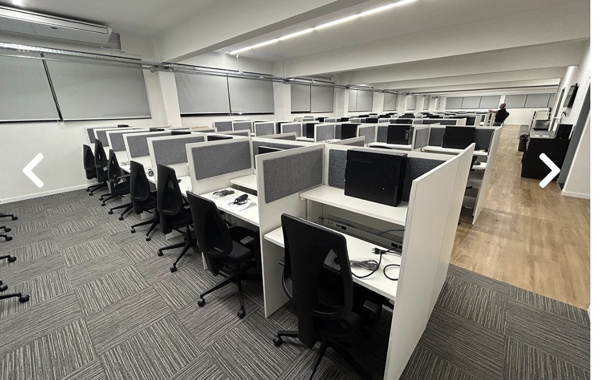
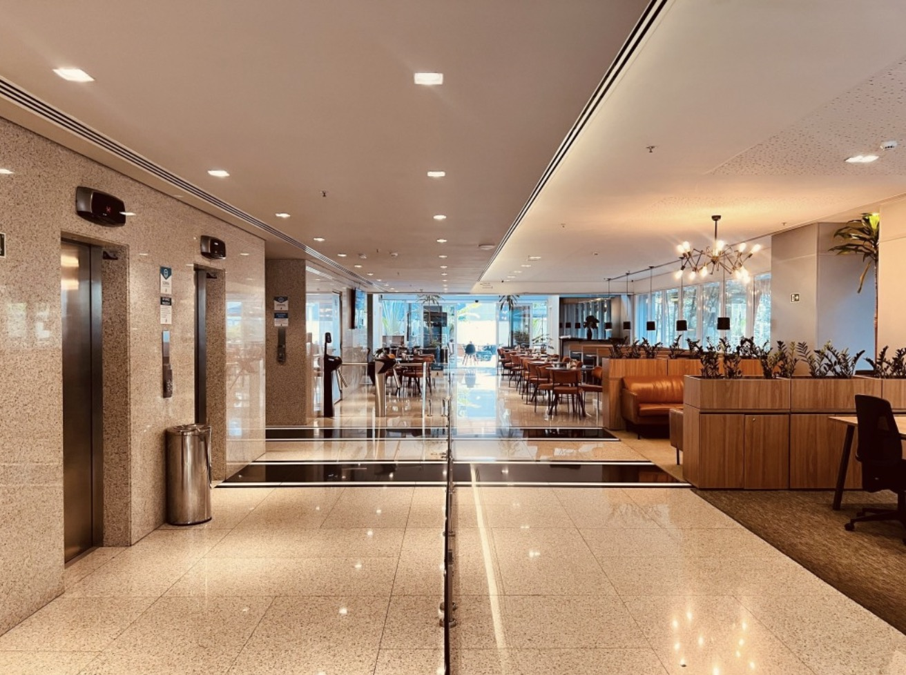
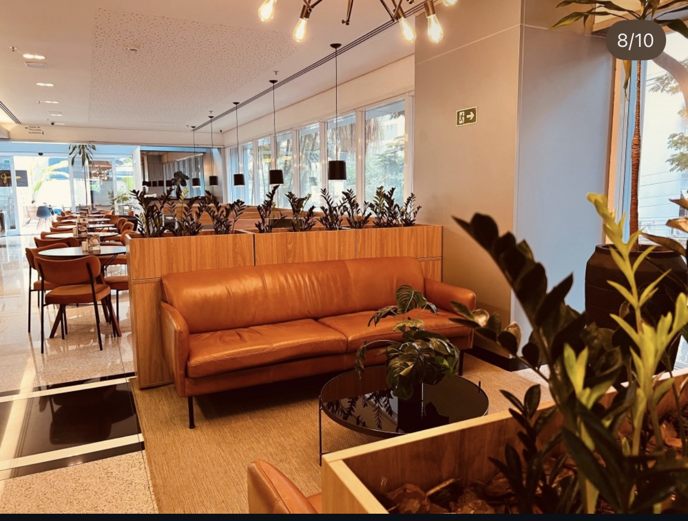
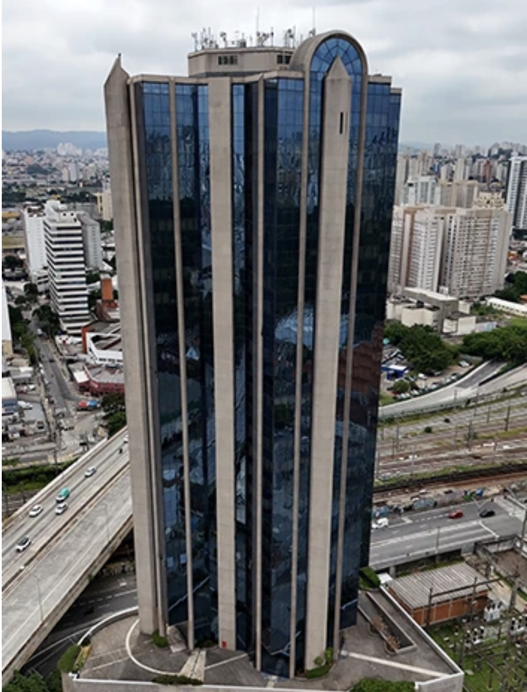

⌁
Energia sem interrupção
Gerador e nobreak para dar mais continuidade à sua operação.
Posições ergonômicas dentro da NR 17, continuidade de energia e estrutura corporativa completa para o seu BPO operar com segurança e eficiência.
Gerador e nobreak para dar mais continuidade à sua operação.
Posições pensadas para ergonomia e bem-estar da equipe.
Equipe dedicada e arquitetos para apoiar a melhor configuração do espaço.
Controle de acesso e ambientes monitorados por câmeras.
A VIP Office leva ao BPO a entrega que já realiza em escritórios corporativos e coworkings: ambientes bem projetados, suporte contínuo e uma experiência completa para a sua equipe.





Da recepção à área operacional, reunimos estrutura, serviços e inteligência de espaço para que sua empresa tenha uma operação mais estável e profissional.
Nosso time apresenta uma solução de infraestrutura alinhada ao tamanho, à rotina e às necessidades do seu BPO.